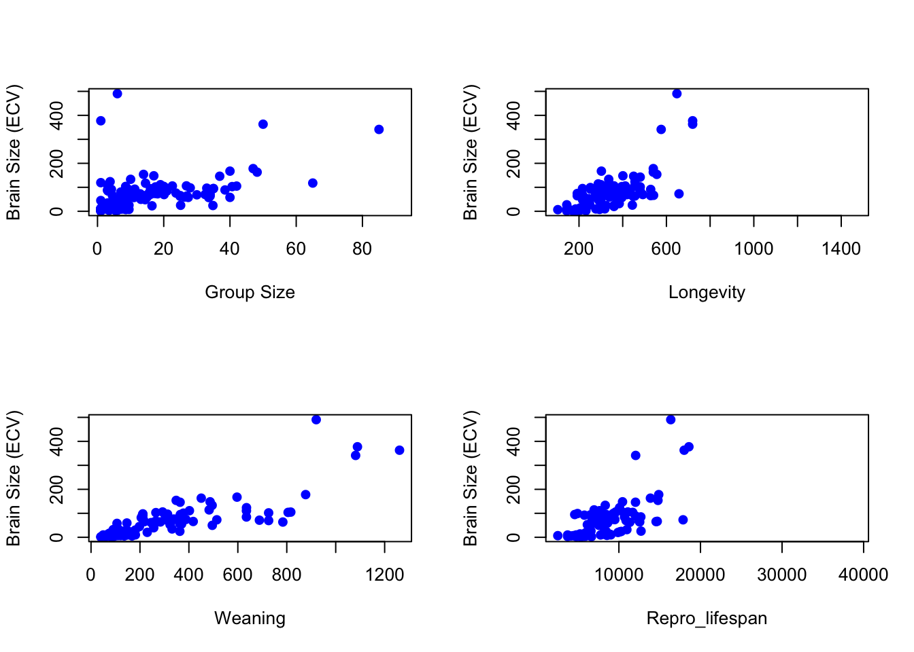
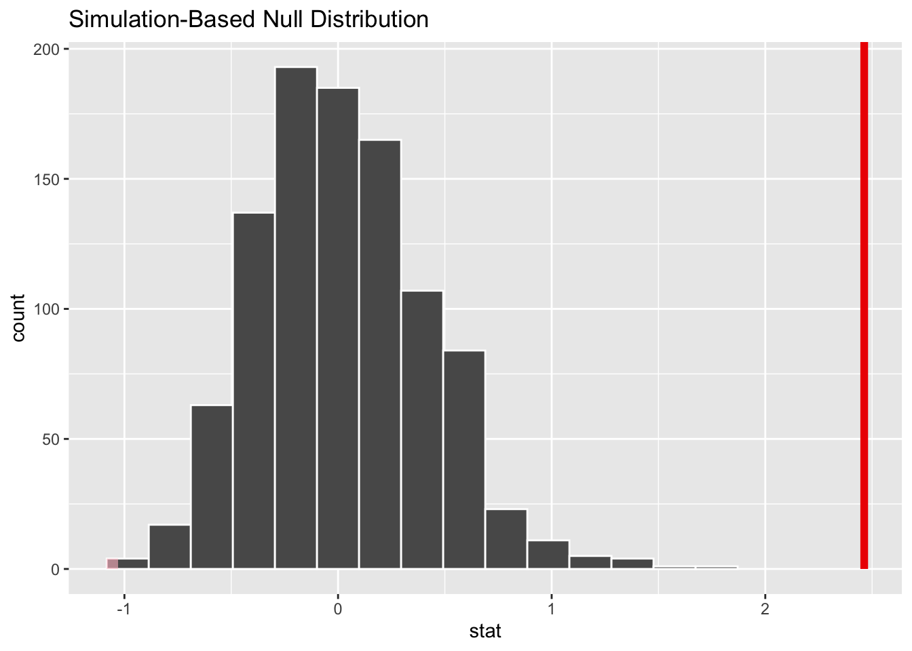

── Attaching core tidyverse packages ──────────────────────── tidyverse 2.0.0 ──
✔ dplyr 1.1.4 ✔ readr 2.1.5
✔ forcats 1.0.0 ✔ stringr 1.5.1
✔ ggplot2 3.5.1 ✔ tibble 3.2.1
✔ lubridate 1.9.3 ✔ tidyr 1.3.1
✔ purrr 1.0.2
── Conflicts ────────────────────────────────────────── tidyverse_conflicts() ──
✖ dplyr::filter() masks stats::filter()
✖ dplyr::lag() masks stats::lag()
ℹ Use the conflicted package (<http://conflicted.r-lib.org/>) to force all conflicts to become errors
library(skimr)
load in data
d <-read_csv("https://raw.githubusercontent.com/difiore/ada-datasets/main/Street_et_al_2017.csv")
Rows: 301 Columns: 13
── Column specification ────────────────────────────────────────────────────────
Delimiter: ","
chr (2): Species, Taxonomic_group
dbl (11): Social_learning, Research_effort, ECV, Group_size, Gestation, Wean...
ℹ Use `spec()` to retrieve the full column specification for this data.
ℹ Specify the column types or set `show_col_types = FALSE` to quiet this message.
plot ECV as a function of social group size (Group_size), longevity (Longevity), juvenile period length (Weaning), and reproductive lifespan (Repro_lifespan).
par(mfrow =c(2, 2))plot(d$Group_size, d$ECV,xlab ="Group Size",ylab ="Brain Size (ECV)",pch =19, col ="blue")plot(d$Longevity, d$ECV,xlab ="Longevity",ylab ="Brain Size (ECV)",pch =19, col ="blue")plot(d$Weaning, d$ECV,xlab ="Weaning",ylab ="Brain Size (ECV)",pch =19, col ="blue")plot(d$Repro_lifespan, d$ECV,xlab ="Repro_lifespan",ylab ="Brain Size (ECV)",pch =19, col ="blue")

calculate the ordinary least squares regression coefficients for ECV as a function of social group size
Call:
lm(formula = ECV ~ Group_size * Taxonomic_group, data = d_clean)
Residuals:
Min 1Q Median 3Q Max
-71.25 -21.89 -5.40 6.73 400.11
Coefficients:
Estimate Std. Error t value Pr(>|t|)
(Intercept) 83.4206 10.5898 7.877 7.22e-13 ***
Group_size 1.1463 0.4107 2.791 0.005965 **
Taxonomic_groupPlatyrrhini -67.2394 18.1711 -3.700 0.000305 ***
Taxonomic_groupStrepsirhini -75.2442 15.3437 -4.904 2.49e-06 ***
Group_size:Taxonomic_groupPlatyrrhini 0.8189 0.9988 0.820 0.413644
Group_size:Taxonomic_groupStrepsirhini 0.6943 2.4927 0.279 0.780986
---
Signif. codes: 0 '***' 0.001 '**' 0.01 '*' 0.05 '.' 0.1 ' ' 1
Residual standard error: 53.93 on 145 degrees of freedom
Multiple R-squared: 0.4154, Adjusted R-squared: 0.3952
F-statistic: 20.6 on 5 and 145 DF, p-value: 1.648e-15
The model indicates that while ECV scales positively with group size across all taxonomic groups, the interaction terms testing for differences in slopes among groups are not significant (p > 0.4). However, the intercepts show significant difference. Platyrrhines and strepsirhines exhibit significantly lower baseline ECV compared to catarrhines.
For the first regression of ECV on social group size, calculate the standard error for the slope coefficient, the 95% CI, and the p value associated with this coefficient by hand.
Warning: Please be cautious in reporting a p-value of 0. This result is an approximation
based on the number of `reps` chosen in the `generate()` step.
ℹ See `get_p_value()` (`?infer::get_p_value()`) for more information.
# A tibble: 1 × 1
p_value
<dbl>
1 0
visualize(null_distribution) +shade_p_value(obs_stat = obs, direction ="both")

The observed slope was more extreme than all permuted slopes with a p-value of < 0.001.
Using bootstrapping to generate a 95% CI for the estimate of the slope coefficient.
library(mosaic)
Registered S3 method overwritten by 'mosaic':
method from
fortify.SpatialPolygonsDataFrame ggplot2
The 'mosaic' package masks several functions from core packages in order to add
additional features. The original behavior of these functions should not be affected by this.
Attaching package: 'mosaic'
The following object is masked from 'package:Matrix':
mean
The following objects are masked from 'package:infer':
prop_test, t_test
The following object is masked from 'package:skimr':
n_missing
The following objects are masked from 'package:dplyr':
count, do, tally
The following object is masked from 'package:purrr':
cross
The following object is masked from 'package:ggplot2':
stat
The following objects are masked from 'package:stats':
binom.test, cor, cor.test, cov, fivenum, IQR, median, prop.test,
quantile, sd, t.test, var
The following objects are masked from 'package:base':
max, mean, min, prod, range, sample, sum